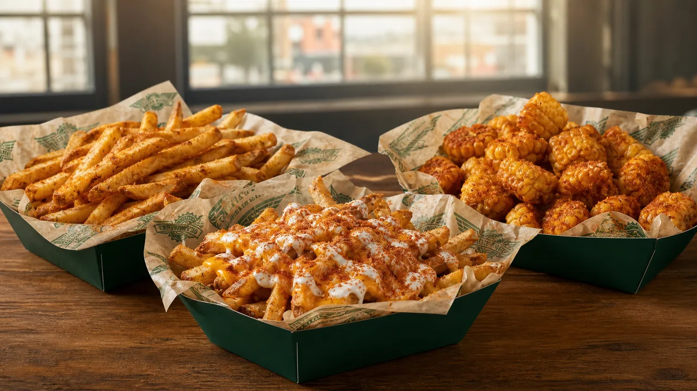

Compare Wingstop seasoned fries, cheese fries, Louisiana Voodoo Fries, Buffalo Ranch Fries, Cajun Fried Corn, and veggie sticks.

Seasoned fries, loaded fries and Cajun fried corn served in green trays
Wingstop sides range from plain seasoned fries and veggie sticks to loaded fries with sauce and cheese. The right choice depends on whether you want a simple side, a shareable upgrade, or another strong flavor beside the wings.
The core side lineup commonly includes seasoned fries, cheese fries, Louisiana Voodoo Fries, Buffalo Ranch Fries, Cajun Fried Corn, and carrot or celery sticks. A selected store may show different sizes or availability.
| Side | What changes | Flavor direction |
|---|---|---|
| Seasoned Fries | Wingstop fry seasoning | Sweet-savory |
| Cheese Fries | Cheese sauce | Rich and mild |
| Louisiana Voodoo Fries | Cajun seasoning, cheese sauce and ranch | Spiced, creamy |
| Buffalo Ranch Fries | Buffalo seasoning and ranch | Tangy, creamy heat |
Wingstop’s official Louisiana Voodoo Fries page confirms the Cajun-seasoned fries are finished with cheese sauce and House Made Ranch.
Loaded fries carry more toppings and can lose crispness during a longer delivery trip. Regular seasoned fries are easier to divide, while Cajun Fried Corn gives the table a side that is not another potato item.
Portion size and toppings change the nutrition total. Wingstop also warns that food is prepared in shared environments. Check the nutrition guide and allergen guide when ingredients or cross-contact affect your choice.
Wingstop describes them as Cajun-seasoned fries topped with cheese sauce and House Made Ranch.
Some stores allow a paid side upgrade. Confirm the option and price in the selected store’s cart.
Several fries and side items are offered in regular and large sizes, but the live menu is the final check.